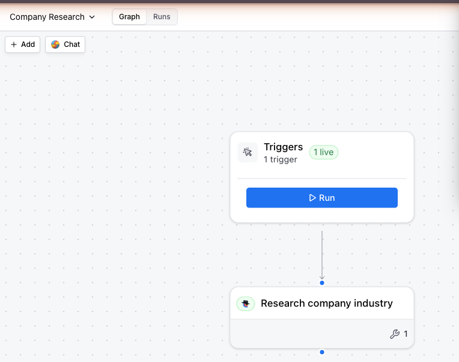
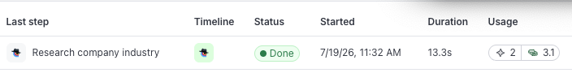

What this gets you
By now you can ask Claude Code to find companies. Finding them is nice. The real question a beginner has is quieter and a little scary: can I actually build something in Clay, or am I just typing and hoping?
You can build something. In this lesson you build a small Clay workflow — a saved set of steps that takes a company and hands back a real answer about it — and you run it. When you finish, there is a thing in your Clay account that you made, that works, that you can run again tomorrow. That is the moment the fear goes away.
The whole build, start to finish
A workflow is just a set of steps with a start and an end. Yours will have two: a start (you hand it a company website) and a research step (it looks the company up and tells you what it does).
You do not build this by clicking around Clay. You ask Claude Code, in plain English, and it builds it for you. Here is the whole thing, start to finish, exactly as it ran.
You:
Create a Clay workflow called "Company Research." Add a step that takes a company's website and uses Clay's AI web researcher to tell me, in one or two words, what industry the company is in. Then run it on geico.com.
Claude Code creates the workflow, adds the step, and runs it. A few seconds later:
geico.com → Insurance (confidence: very high)That answer is not made up. The researcher visited geico.com, read the site, and reported back — it even keeps the links it used, so you can check its work (that is Lesson 4). A run usually takes well under a minute. It also costs you something: Clay charges in two separate units, credits and actions, and one run of this workflow spends about three credits plus two actions. They are counted separately and do not add together.
You never typed that question, but a question is what ran, and this is it, word for word:
Visit {{domain}}. In one or two words, what industry is this company in?
Return only the industry name.Two things to notice. It is an ordinary English sentence, not code — you could have written it yourself. And {{domain}} is a slot: the company website you hand the workflow drops in there on every run, which is why the same step works on geico.com today and on any other company tomorrow, without you changing anything.
You can see this on your own workflow. Ask:
Show me the exact question that research step is running.
Here is what it looks like in your Clay account. The workflow is a little map — a start box connected to your research step:

And every time you run it, Clay logs the run so you can see what happened:

Try it
You will build the exact same thing. Nothing here changes anything outside this one workflow, and nothing costs more than a run or two.
First, what "done" looks like: a workflow named Company Research exists in your Clay account, and running it on a company website returns an industry. That is the whole target.
One thing you may see and should not read as failure: sometimes the answer comes back with no pages attached to it. That usually means the researcher's search turned up nothing and it answered from what it already knew instead of from a site. The answer may well be right. Nothing behind it has been checked, though, and Lesson 4 is where you learn to tell those two apart.
Now you:
- Open Claude Code and make sure Clay is connected (Lesson 1).
- Copy this and send it, word for word:
Create a Clay workflow called "Company Research." Add a step that takes a company's website and uses Clay's AI web researcher (claygent) to return, in one or two words, the industry the company is in. Then run it on stripe.com and show me the result.
- Watch what Claude Code does. It will tell you it created the workflow, added the step, and started a run. Give it up to half a minute, then it shows you the answer. For stripe.com the answer that comes back most often is "Financial Services." The exact wording moves around from run to run, so do not measure yourself against that string — any short label that means finance ("Fintech" is a common one) means you built it right.
- Open the workflow in Clay. Claude Code gives you a link when it creates it — click it. You will see the little map from above, and a Runs tab with your run in it.
If it stalls or errors, tell Claude Code "that returned an error, read it and tell me what happened" — the error almost always says exactly what to fix, and a retry costs a credit or two rather than nothing.
Check yourself
Three quick ones. Nothing here is scored.
Fine print
The exact steps, dates, and limits
- Built and run live on a real Clay account on July 19, 2026. The research step uses Clay's "Claygent (AI Web Researcher)" action; the run on geico.com returned "Insurance" (confidence very high) for about 5 credits. Lesson 4's fine print has the full timing spread.
- The Agent Plugin is in open beta. Clay's documentation states there are no current plans to support building spreadsheet-style tables through the developer platform, and reading existing Clay tables this way is limited to Enterprise plans (Clay docs: clay-api-cli, checked Jul 18, 2026). A workflow does not need a table.
- The question a run actually executed is readable after the fact, off the finished run itself. If the question saved on the step and the question the run executed ever disagree, the run is the ground truth — that is what produced the answer you are looking at.
- Claude Code builds the workflow through Clay's plugin — you never write code or click through Clay's builder yourself. If you're curious what it ran under the hood, ask it "show me what you built" and it will walk you through the steps.